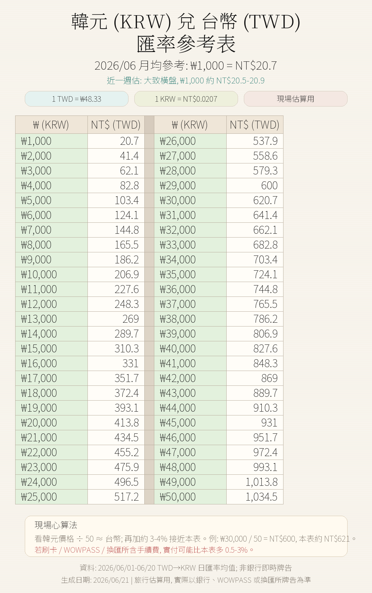
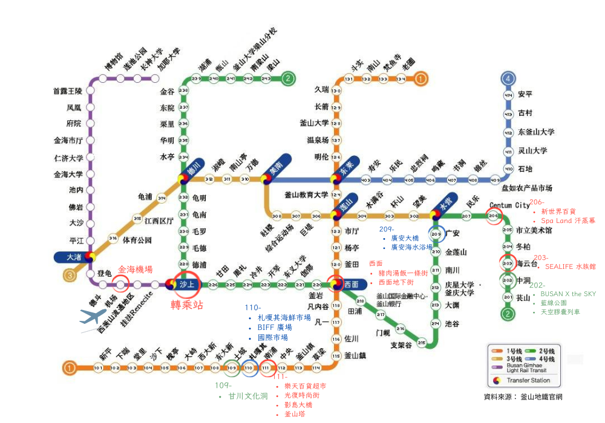

| 時間 | 地點 | 說明 |
|---|---|---|
| 09:00–09:25 | 韓服換裝 | Pass 免費，趁早選款式；注意選舒適鞋，村內坡度陡 |
| 09:25–09:45 | 入口廣場→彩色階梯 | 最密集拍照段，坡度平緩，停留 20 分鐘 |
| 09:45–10:10 | 天空展望台 & 小王子 | 俯瞰全村最佳構圖位置，拍完即刻前往手翻書 |
| 10:10–10:55 | Flipbook Studio（手翻書） | BIG 5 Pass B 套包含，拍攝+製作+等候約 40–50 分鐘，務必優先做，勿留到最後 |
| 10:55–11:15 | 壁畫巷弄漫遊 | 20 分鐘夠繞一輪，不必強求全逛 |
| 11:15–11:20 | 還韓服 & 出發準備 | 整理行李，叫計程車前往松島 |
| 位置 | 推薦度 | 說明 | 額外購物 |
|---|---|---|---|
| 金海機場 B1 便利商店 |
首選 | 入境出關後直接購買，無須繞路。機場便利商店為 GS25、CU、emart24，營業時間不限。購買卡片本身免費，需加值 20,000 KRW（或更多）。此時也可購買釜山地鐵交通圖冊，對後續行動有幫助。 | 飲料、零食 |
| 飯店附近 CU/GS25 |
備方案 | 若機場便利店排隊過長，飯店周邊必有便利商店可購買。BEXCO / Centum City 周邊至少 2-3 間。但此時已是 19:00+，建議機場就買好。 | 宵夜零食 |
| 南浦洞 GS25 旗艦店 |
補值 | Day 5 下午購物時順便進店，若卡內餘額不足可當場加值。GS25 在南浦洞密佈，隨處可得。 | 大採購 |

| 景點名稱 | 韓文 | 位置 | Pass 套別 | Pass 內容 | 備註 |
|---|---|---|---|---|---|
| Skyline Luge 滑車 | 스카이라인 루지 | 機張 | 🟣 A 套（紫色） | 免費 2 次搭乘 | Day 3 首個兌換景點 |
| Busan X The Sky 觀景台 | 부산 X 더 스카이 | 尾浦 LCT | 🟣 A 套（紫色） | 免費入場 | Day 4 14:15–16:30，共 99–100F |
| 甘川洞文化村 韓服 | 감천문화마을 | 甘川洞 | 🔵 B 套（藍色） | 免費韓服租借（限 2 小時） | Day 5 09:00–11:20，需提前確認營業 |
| 松島海上纜車 | 송도해상케이블카 | 松島 | 🔵 B 套（藍色） | 免費搭乘來回 | Day 5 11:45 抵達兌換 |
| Flipbook Studio（手翻書） | 플립북 스튜디오 | 甘川洞 | 🔵 B 套（藍色） | 包含製作手翻書 | Day 5 10:10–10:55，需確認營業日 |
| 龍宮雲橋 | 용궁구름다리 | 松島 | 自付費 | 約 8,000–10,000 Won/人 | Day 5 纜車後步行可達，需另購票 |
| 釜山 SEA LIFE 水族館 | 씨라이프 부산 | 冬柏 | 折扣 | 折扣入場（10,000 KRW） | Day 5 備案景點，若時間充足可加入 |
| 釜山塔 Tower Sky | 부산타워 | 龍頭山公園 | 折扣 | 折扣入場（9,000 KRW） | 傍晚夜景首選，Day 5 備案 |
| 景點 | 預約平台 | 預約原因 | 是否扣 Pass | 預訂確認 |
|---|---|---|---|---|
| 天空膠囊列車 스카이캡슐 |
Klook / Naver | 座位有限，場次固定 | ✗ 不扣 | Day 4 11:00 出發 |
| 海濱列車 해변열차 |
Klook / Naver | 每班乘客上限 100 人 | ✗ 不扣 | Day 4 13:30 出發 |
| Flipbook Studio（手翻書） 플립북 스튜디오 |
BIG 5 Pass B 套兌換 | BIG 5 Pass B 套（藍色）包含 | ✓ 扣 Pass B | Day 5 10:10–10:55 |

| 用途 | 韓文 / 搜尋字 | 備註 |
|---|---|---|
| 飯店 | 트래블로지 스위트 부산 센텀 21 APEC-ro, Haeundae-gu |
Kakao T 回飯店直接貼韓文名稱；站點以 BEXCO / Centum City 為基準。 |
| 機場 | 김해국제공항 국제선청사 | 回程叫車務必選「國際線航廈」，不要選國內線。 |
| 尾浦藍線 | 해운대블루라인파크 미포정거장 | Day 4 天空膠囊出發站；準時抵達比省車資重要。 |
| 廣安里 | 광안리해수욕장 | 看無人機秀與晚餐，用海邊道路作下車點。 |
| 甘川洞 | 감천문화마을 | 請停在文化村入口 / 服務中心附近，不要停山下市場。 |
| 松島纜車 | 송도해상케이블카 / 송도베이스테이션 | 先到售票處確認纜車與龍宮雲橋營運狀態。 |
| 日期 | 必查事項 | 若異常 |
|---|---|---|
| Day 1 | 航班抵達時間、金海機場出關速度、T-money / WOWPASS 是否順利取得。 | 晚到則取消 The Bay 101，改飯店附近晚餐。 |
| Day 2 | 廣安里無人機秀公告、五六島天空步道天候、Naver Weather 降雨雷達。 | 改 SEA LIFE、F1963 或廣安里室內餐廳。 |
| Day 3 | Skyline Luge 是否營運、龍宮寺雨勢、機張區路況。 | Luge 停駛則提早回 Centum / Spa Land。 |
| Day 4 | Blue Line Park 場次、風雨狀況、電子票憑證是否可離線開啟。 | 強風停駛則聯繫客服改期 / 退款，改 X The Sky + Centum 室內行程。 |
| Day 5 | Flipbook Studio 營業、松島纜車、龍宮雲橋、南浦洞採購時間。 | 雲橋關閉就只搭纜車；豪雨則改南浦洞 / 百貨室內。 |
| Day 6 | Kakao T 預約車、退稅單、護照、退稅商品是否可供海關查驗。 | 叫不到車立刻請飯店櫃台協助叫車。 |
| 緊急情況 | 聯絡方式 | 備註 |
|---|---|---|
| 警察 / 火警 / 救護車 | 119 或 112 | 有英文支援，告知飯店地址 |
| 台灣駐釜山代表處 | +82-51-860-8813 | 領事保護 / 護照遺失 |
| 釜山大學醫院 | +82-51-240-7000 | 英文服務，釜山最大醫院 |
| Kakao T 客服 | App 內 24h 聊天 | 計程車糾紛或無故不到 |
| Klook 客服 | +886-2-8786-0000 | 景點預訂問題（台灣營運） |
| 項目 | 限制 | 超重罰款 |
|---|---|---|
| 托運行李 | 30 kg × 2 件 | NT$50 / kg |
| 隨身行李 | 7 kg × 1 件 | 拒絕登機 |
| 液體 / 凝膠 | 100ml 以下單件，1L 透明袋內 | 沒收 |
| 商業用途進口 | 相同商品 ≥10 件視為進口 | 需申報關稅 |
| 日期 | 行程日 | 預報判斷 | 雨備等級 |
|---|---|---|---|
| 6/26 | Day 1 | 小雨 / drizzle，降雨機率約 38%，雨量約 0.9mm。以交通與入住為主，影響有限。 | 中低 |
| 6/27 | Day 2 | 多雲，降雨機率約 22%，預估雨量 0mm。海雲台、五六島、廣安里可照原計畫，但晚間無人機秀仍需查公告。 | 低 |
| 6/28 | Day 3 | 多雲，降雨機率約 20%，預估雨量 0mm。龍宮寺與 Luge 目前可照排，出發前再查 Luge 營運。 | 低 |
| 6/29 | Day 4 | 多雲，降雨機率約 25%，預估雨量 0mm。藍線列車與 X The Sky 風險低，仍需確認強風公告。 | 低 |
| 6/30 | Day 5 | 多雲，降雨機率約 27%，預估雨量 0mm。甘川洞與松島目前可照排，但坡道路線仍建議穿防滑鞋。 | 低 |
| 7/1 | Day 6 | 毛毛雨 / drizzle，降雨機率約 45%，雨量約 2.8mm。返程日影響小，但叫車與行李搬運要預留時間。 | 中 |
| 景點 | 交通 | 費用 | 適合時機 |
|---|---|---|---|
| SEA LIFE 水族館 씨라이프부산아쿠아리움 |
해운대역 步行 5 分 | ~28,000 KRW/人 | Day 2 海雲台雨天首選，全室內 1.5h |
| Spa Land 스파랜드 |
센텀시티역 直結 | Pass 免費（限 4h） | 任何天，Day 3 雨天 Luge 取消可提早入場 |
| 新世界百貨 Centum City 신세계백화점 센텀시티 |
센텀시티역 直結 | 免費入場 | Day 5 全天大雨備案，B1 美食＋購物全包 |
| F1963 에프원나인육삼 |
수영역 步行 10 分 | 免費入場 | Day 2 下午備案，工業風文化空間、書店、咖啡廳 |
| 釜山博物館 부산박물관 |
대연역 步行 5 分 | 免費 | 任何天雨天補救，了解釜山歷史，約 1.5h |
| BIFF 廣場地下商城 BIFF광장 지하상가 |
남포역 步行 3 分 | 免費入場 | Day 5 南浦洞購物，全室內無懼大雨 |
| 樂天百貨광복점 롯데백화점 광복점 |
남포역 步行 5 分 | 免費入場 | Day 5 南浦洞備案，樓頂有海景露台（晴天） |
| 景點名稱 | 一般票價 | 需預約 | 室內/外 | 交通便利度 | 推薦度 | 備註 |
|---|---|---|---|---|---|---|
| Skyline Luge Busan 스카이라인 루지 부산 已排入 Day 3 |
~15,000 KRW (2次套票) |
免預約 | 室外 | 計程車為主 | ★★★★☆ | 機張區，下雨會暫停營運，雨天此景點最容易被取消，需備案 |
| Busan X the Sky 부산엑스더스카이 已排入 Day 4 |
27,000 KRW | 免預約 | 室內 | 地鐵+步行 | ★★★★★ | LCT The Sharp 101F，全室內，雨天最佳備案，99F 透明地板必拍 |
| Lotte World Adventure Busan 롯데월드 어드벤처 부산 |
47,000–62,000 KRW (全日券) |
免預約 | 室外+室內 | 較遠，需地鐵+公車或計程車約40分 | ★★★★☆ | 機張奧西利亞，下雨多項遊樂設施會停駛，但室內設施仍可玩，整天行程 |
| Spa Land Centum City 스파랜드 센텀시티 已排入 Day 3 |
25,000 KRW (限時) |
免預約 | 室內 | 地鐵直結 | ★★★★★ | 新世界百貨地下，全室內，雨天最佳備案之一，22種主題浴池 |
| Busan City Tour Bus 부산시티투어버스 |
~15,000 KRW | 免預約 | 室外（車上室內） | 巴士站固定發車 | ★★★☆☆ | 觀光巴士繞行市區景點，下雨仍可乘坐但下車拍照受限 |
| Busan Diamond Bay Yacht 부산다이아몬드베이요트 |
~40,000 KRW | 需預約（約3週前） | 室外 | 廣安里搭乘 | ★★★★☆ | 遊艇遊廣安大橋海域，天候不佳會取消改期，不建議雨天備案（需提前預約不適合臨時替換） |
| ClubD Oasis 클럽디오아시스 |
~30,000 KRW | 建議預約 | 室內 | 海雲台地鐵周邊 | ★★★☆☆ | 海雲台室內水上樂園/SPA設施，雨天可作備案但需確認時段 |
| Daeyoung Taekwondo 대영태권도 |
~20,000 KRW | 建議預約 | 室內 | 廣安里周邊 | ★★★☆☆ | 跆拳道體驗課程，室內活動雨天不受影響，需團體報名 |
| Hotel Aqua Palace Spa & Sauna 아쿠아펠리스 스파&사우나 |
~20,000 KRW | 免預約 | 室內 | 廣安里周邊 | ★★★☆☆ | 飯店附設汗蒸幕，雨天可作為 Spa Land 的替代方案 |
| Surf Holic Dadaepo 서프홀릭 다대포 |
~30,000 KRW | 建議預約 | 室外 | 較遠，需地鐵+步行約45分 | ★★☆☆☆ | 多大浦衝浪體驗，雨天/風大不適合，不建議作為雨備 |
| 景點名稱 | 一般票價 | 需預約 | 室內/外 | 交通便利度 | 推薦度 | 備註 |
|---|---|---|---|---|---|---|
| Gamcheon Romantic Hanbok 감천 로맨틱 한복 已排入 Day 5 |
~15,000 KRW | 免預約 | 室內(換裝)+室外(穿著遊覽) | 計程車為主，較遠 | ★★★★★ | 甘川洞文化村內，雨天石板路濕滑需注意，韓服長裙款較適合雨天 |
| Flipbook Studio 플립북 스튜디오 已排入 Day 5 |
~10,000–15,000 KRW | 免預約 | 室內 | 同甘川洞，較遠 | ★★★★☆ | 甘川洞文化村內，全室內完全不受天氣影響，是 Day 5 雨天最穩定的環節 |
| Songdo Marine Cable Car 송도해상케이블카 已排入 Day 5 |
~20,000–22,000 KRW (一般艙來回) |
免預約 | 室外(纜車本身可遮蔽) | 計程車約15分 | ★★★★☆ | 松島，強風/雷雨會停駛，微雨通常正常運行，出發前確認官網 |
| Songdo Yonggung Suspension Bridge 송도용궁구름다리 |
非Pass項目 約3,000 KRW自費 |
免預約 | 室外 | 同松島纜車站 | ★★★☆☆ | 雨天禁止入場（懸空吊橋濕滑危險），須留意天候，此為自費非 Pass 包含 |
| Busan Tower 부산타워 |
10,000 KRW | 免預約 | 室內(展望台) | 南浦站步行+手扶梯 | ★★★★☆ | 龍頭山公園內，室內展望台雨天不受影響，南浦洞購物可順遊，CP值高 |
| Busan Museum of Movies 부산영화체험박물관 |
~9,000 KRW | 免預約 | 室內 | 釜山站周邊 | ★★★☆☆ | 電影主題互動展館，全室內，雨天備案佳，適合喜歡電影的旅客 |
| Haeundae Beach Train 해운대 블루라인파크 해변열차 已排入 Day 4（另購膠囊） |
~10,000–16,000 KRW | 建議事先預約 (熱門時段易售完) |
室外(車廂內遮蔽) | 地鐵+步行 | ★★★★☆ | 微雨可正常行駛(車廂有遮蔽)，但強風雨可能停駛，出發前確認 |
| Museum 1 뮤지엄1 |
~18,000 KRW | 免預約 | 室內 | 海雲台周邊 | ★★★★☆ | 沉浸式數位藝術展覽（類似TeamLab），全室內，雨天首選，拍照效果極佳 |
| Haeon Hanbok 해온한복 |
~15,000 KRW | 免預約 | 室內(換裝)+室外(遊覽) | 海雲台周邊 | ★★★☆☆ | 海雲台韓服體驗，與甘川洞韓服功能類似，雨天遊覽受限 |
| Hillspa 힐스파 |
~15,000–20,000 KRW | 免預約 | 室內 | 海雲台周邊 | ★★★☆☆ | 海雲台溫泉設施，全室內，與 Spa Land 類似但規模較小 |
| SEA LIFE Busan Aquarium 씨라이프부산아쿠아리움 |
~28,000 KRW | 免預約 | 室內 | 해운대역 步行5分 | ★★★★★ | 全室內水族館，雨備首選，180度玻璃海底隧道，約1.5–2小時 |
| Brick Campus Busan 브릭캠퍼스부산 |
~16,000 KRW | 免預約 | 室內 | 機張，較遠 | ★★★☆☆ | 樂高積木主題館，全室內，鄰近 Skyline Luge，若 Luge 取消可順遊 |
| Busan National Science Museum 국립부산과학관 |
免費–4,000 KRW | 免預約 | 室內 | 機張，較遠 | ★★★☆☆ | 科學博物館，全室內，適合 Day 3 機張區雨天備案 |
| Ahopsan Forest 아홉산숲 |
~3,000 KRW | 建議預約 | 室外 | 機張，需接駁車 | ★★★★☆ | 知名竹林步道（影視拍攝地），雨天泥濘需注意，竹林雨中意境佳但不建議豪雨前往 |
| Arte Museum Busan 아르떼뮤지엄부산 |
~18,000 KRW | 免預約 | 室內 | 기장，較遠，計程車或接駁 | ★★★★★ | 沉浸式數位光影藝術展（類似teamLab），全室內，極佳雨備，拍照效果絕佳 |
| Running Man Busan 런닝맨 부산 |
~19,000 KRW | 免預約 | 室內 | 西面周邊 | ★★★★☆ | 韓綜主題互動樂園，全室內，適合親子或喜歡綜藝的旅客，約1.5–2小時 |
| DIAegg（密室逃脫） 디아에그 |
~25,000–30,000 KRW | 需預約 | 室內 | 西面周邊 | ★★★☆☆ | 密室逃脫遊戲，全室內，需提前預約時段，雨天備案需安排好時間 |
| Laser Arena (Samjeong Tower / Seomyeon) 레이저아레나 |
~15,000–20,000 KRW | 建議預約 | 室內 | 西面周邊 | ★★★☆☆ | 雷射戰場體驗，全室內，適合喜歡刺激活動的旅客 |
| Seomyeon Museum of Art 서면미술관 |
~10,000 KRW | 免預約 | 室內 | 西面站周邊 | ★★★☆☆ | 小型美術館，全室內，西面購物之餘可順遊 |
| Arte Museum (Yeongdo) 아르떼뮤지엄 |
~18,000 KRW | 免預約 | 室內 | 影島，計程車較方便 | ★★★★☆ | 另一處數位藝術展館（影島館），全室內 |
| Korea National Maritime Museum 국립해양박물관 |
免費（特展另計） | 免預約 | 室內 | 影島，公車或計程車 | ★★★★☆ | 免費海洋博物館，全室內且免費，性價比極高的雨備選擇 |
| Chulsu and Younghee（韓服） 철수와영희 |
~15,000 KRW | 免預約 | 室內(換裝)+室外(遊覽) | 影島，計程車較方便 | ★★★☆☆ | 影島韓服體驗，雨天遊覽受限但換裝拍照在室內 |
| Taejongdae Danubi Train 태종대 다누비열차 |
~4,000 KRW | 免預約 | 室外(車廂可遮蔽) | 影島，公車或計程車 | ★★★★☆ | 太宗台環島小火車，微雨可乘坐(車廂遮蔽)，但景觀公園步道雨天較濕滑 |
| Nakdong River Ecological Cruise 낙동강생태탐방선 |
~12,000 KRW | 需預約 | 室外(船艙可遮蔽) | 較遠，需地鐵+接駁 | ★★★☆☆ | 洛東江生態遊船，強風雨天可能停駛，船艙有遮蔽但景觀受限 |
| Ibgogae（韓服） 입고개 |
~15,000 KRW | 免預約 | 室內(換裝)+室外(遊覽) | 較遠 | ★★★☆☆ | 西部圈韓服體驗，與甘川洞韓服功能類似 |